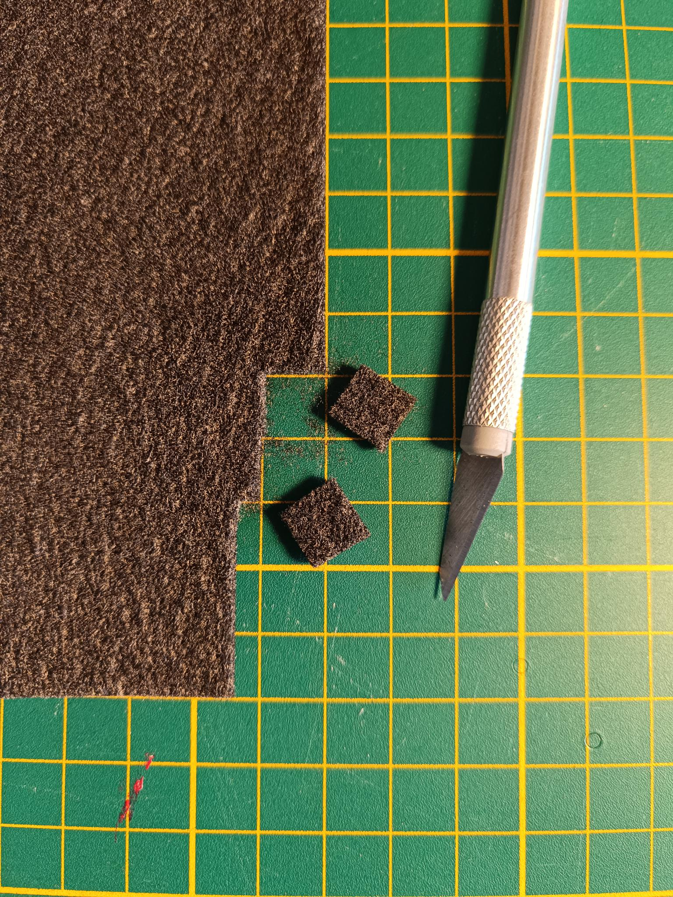
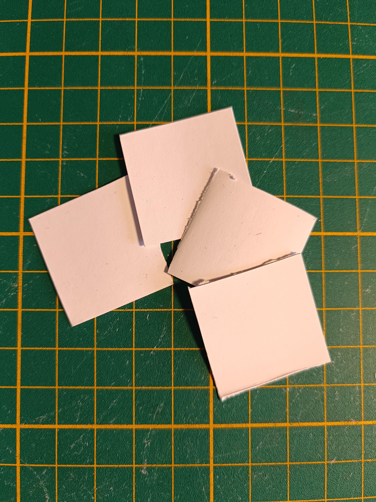

Fabricating components

- 3D printing or milling
- Drilling
- Cutting
Bill of Materials
Parts
- a small plate of 1 mm brass sheet
- 4 cm² of conductive felt
- 160 cm² of gasket sheet - Dimensions must be at least enough to cut out approx. four 6 cm x 8 cm rectangles, an A4 sheet is enough
- 100 cm² of grafoil
- 2 peristaltic pumps
- some polypropylene filament - This can be substituted if you only plan to run water through the cell for testing things other than the chemistry
- A4 sheet separator sheet
- some stiff filament - PLA works
- 44 cm of tubing
Tools
- 1 FDM printer
- 1 gasket cutter machine - Vinyl/laser cutter or hand tools
- 1 utility knife
You will need a FDM printer and at least two types of filament, stiff filament and polypropylene filament.
Step 1: Print one jig and one cell assembly tool
Print the jig and cell assembly tool in PLA or whatever material you can print easily. It does not have to be chemically resistant or that strong, so you can use a low infill.
Print Arduino Uno case parts
These parts can be done in PLA or similar filaments at low infill. They mount onto the back of the jig.
Note
3D Printed Case for Arduino Uno, Leonardo by ZygmuntW is licensed under the Creative Commons - Attribution - Share Alike license.
Step 2: Print two endplates
These endplates must be stiff, so print them with at least 60% infill. Try to avoid warping as they bottom need to be flat to seal the cell well.
Step 3: Print wetted cell components in polypropylene
Print two reservoirs, two flow frames, and one membrane frame
It's important these don't leak, so print them at 100% infill with 5 perimeters.
Warning
The total combined thickess of the flow frames and (compressed) gaskets is important! There are multiple thickness options in the flow-frames folder and custom thicknesses can be genererated from the FreeCAD files. The graphite felt should be compressed to 70% of it's original thickness. The compression is fixed by the combined total thickness of the flow frame and two gaskets.
Step 4: Cut gaskets
Note:
Cutting the gaskets is most easily done with a vinyl cutter machine or laser cutter, but can also be done manually with a steady hand, utility blade, and appropriately sized punches.
- Using a gasket cutter machine, download the gasket file and cut a sheet of gasket material to make the following four gaskets:
This makes two inner gaskets and two outer gaskets.
Step 5: Cut porous electrodes
Cut two conductive graphite felt electrodes to fit inside the flow frames using scissors or a utility knife. Our current standard test uses 2 cm² geometric area cells, so cut two squares each with a side length of 14.1 mm from a larger piece of conductive felt.

This makes two cut electrodes.
Step 6: Cut separator membrane
Cut separator sheet into four 2.7 cm x 2.7 cm squares.

This produces four cut membranes
Step 7: Cut grafoil current collectors
Using a precut gasket as a guide, cut/punch grafoil into the following shape to make grafoil current collectors.
Step 8: Cut brass current collectors
Using a router or a drill (press), cut some 1 mm brass sheet according to the below drawing to make two brass current collectors.
Cut tubing
Cut tubing into 2x 17 cm and 2x 5 cm pieces. Load the long pieces into the peristaltic pumps as shown: